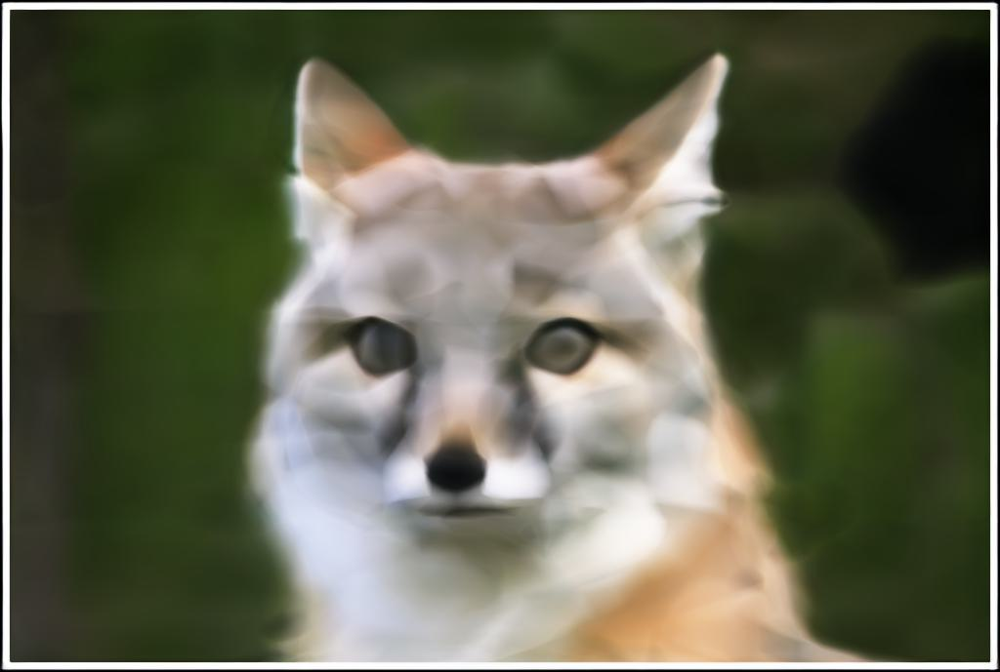
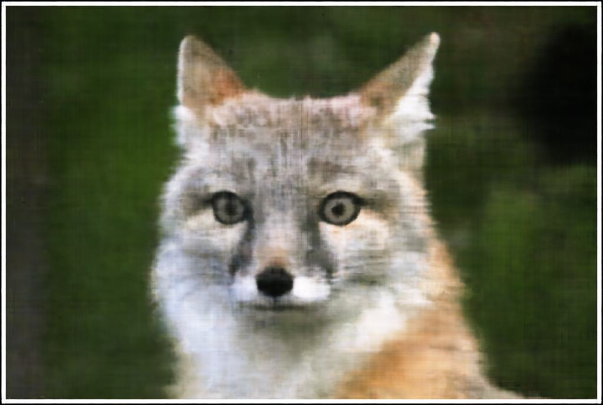
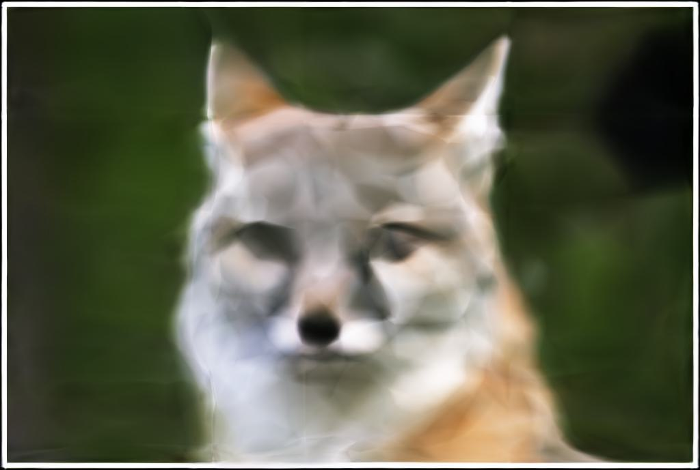

Part 1: Fit a Neural Field to a 2D Image
Now, we will use Neural Fields to fit and represent 2D images. The model
architecture I used for this was a Multilayer Perceptron with four linear layers,
each followed by ReLU layers with the exception of the last layer, which was followed
by Sigmoid layers. Additionally, the model applies Sinusoidal Positional Encoding
to the input, which applies a series of sinusoidal functions to the input
coordinates to increase its dimensionality. the PE function is given by
$$
PE(x) = \{x, sin(2^0\pi x), cos(2^0\pi x), sin(2^1\pi x), cos(2^1\pi x),
\dots, sin(2^{L-1}\pi x), cos(2^{L-1}\pi x)\}
$$
for some $L$. I used an $L$ value of $10$, a model width of $256$, and
a learning rate of $1$e-$2$.
To measure the accuracy of the model, we will use Peak signal-to-noise
ratio (PSNR), which is computed from MSE by
$$
PSNR = 10 \cdot log_{10}\left(\frac{1}{MSE}\right).
$$
Training a model on the provided fox image, we get the following results:

800 Epochs

3000 Epochs

Original
This is the PSNR curve for the above training run:
Training the Neural Field with lower $L$ and model width values, we get the following:
$L = 10$, model width $= 256$

$L = 3$, model width $= 256$

$L = 10$, model width $= 64$

$L = 3$, model width $= 64$
I also trained a model on a picture of a cat using the same parameters are before
and got the following results:
Part 2: Fit a Neural Radiance Field from Multi-view Images
Now instead of just representing a 2D image, we want to represent an entire 3D
space, with the goal of modeling a 3D object in the space so that we can
generate novel views.
First, we will train a Neural Radiance Field on the provided lego images. Below
are some of them:
The first thing we need to do is convert between camera and world coordinates. The
conversion from world coordinates to camera coordinates is given by
$$
\begin{bmatrix}
x_c \\ y_c \\ z_c \\ 1
\end{bmatrix} = \begin{bmatrix}
\mathbf{R}_{3 \times 3} & \mathbf{t} \\
\mathbf{0}_{1 \times 3} & 1
\end{bmatrix} \cdot \begin{bmatrix}
x_w \\ y_w \\ z_w \\ 1
\end{bmatrix},
$$
where $\mathbf{R}_{3 \times 3}$ is a rotation matrix and $\mathbf{t}$ is a
translation matrix.
Next we need to convert between pixel and camera coordinates. The
conversion from camera coordinates to pixel coordinates is given by
$$
s \begin{bmatrix}
u \\ v \\ 1
\end{bmatrix} = \mathbf{K} \begin{bmatrix}
x_c \\ y_c \\ z_c
\end{bmatrix},
$$
where $s$ is the depth of the point along the optical axis and $\mathbf{K}$ is
the camera's intrinsic matrix defined by
$$
\mathbf{K} = \begin{bmatrix}
f_x & 0 & o_x \\
0 & f_y & o_y \\
0 & 0 & 1
\end{bmatrix}.
$$
Next, we need to calculate the ray going from any given pixel to the camera.
To do this, we need the ray origin, which is just the translation,
$$
\mathbf{r}_o = \mathbf{t},
$$
and the ray direction, which we can compute by
$$
\mathbf{r}_d = \frac{\mathbf{X}_w - \mathbf{r}_o}{\|\mathbf{X}_w - \mathbf{r}_o\|_2}.
$$
Finally, we randomly sample rays from different camera angles, and then sample
points along those rays to get the values of points in the 3D space.
If we visualize the computed rays and points along those rays, with a varying number
of cameras, we get the following results:
Now we can use these points and rays to train a Neural Radiance Field.
Compared to the 2D Neural Field, the model now has more layers and
splits into 2 heads: one to compute density and one to compute the rgb values.
With density and rgb values, we just need to add the values along the ray together
in a process called volume rendering to get a rendered color. Then we can
compute a color for each pixel to render an image.
Below is the training progression for the Lego model over time:
Below are the training and validation PSNR curves for the above
training. Validation PSNR was computed every 50 epochs. The validation
PSNR reached 23.15 at epoch 1750, when training stopped.
Finally, below is a spherical rendering video of the Lego model
using the provided test cameras:
Unfortunately, I was not able to make much meaningful training progress on the
dataset I created, which I think is because of issues with the camera calibration
and tag detection that I wasn't able to figure out.